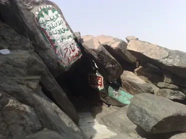
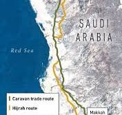
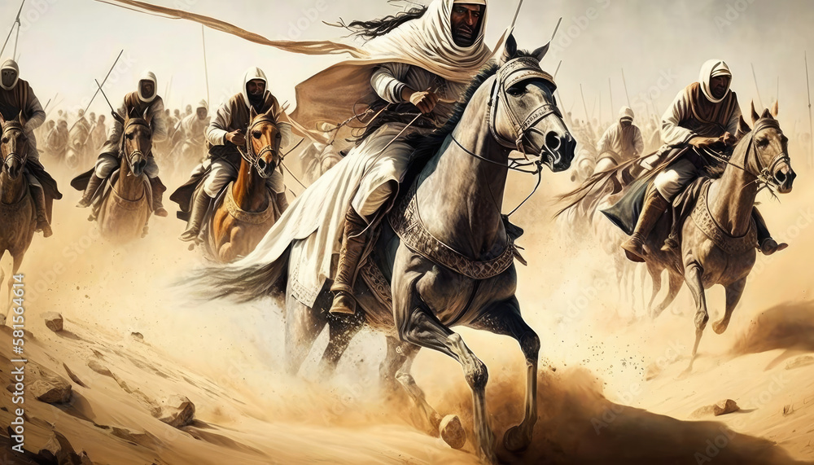
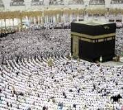

Key Moments in the Spread of Islam




Prophet Muhammad received his first revelation from the Angel Gabriel in the Cave of Hira.
Muhammad and his followers migrated from Mecca to Medina, marking the beginning of the Islamic calendar.
The Muslims conquered Mecca and declared it the spiritual center of Islam.
Muslim armies crossed into Spain, beginning the spread of Islam in Europe.
The Ottoman Empire conquered Constantinople, further expanding the influence of Islam.
The declaration of faith: "There is no god but Allah, and Muhammad is his prophet."
Performing prayers five times a day.
Giving charity to the needy.
Fasting during the month of Ramadan.
Pilgrimage to Mecca at least once in a lifetime.
Islam emerged in the early 7th century in the Arabian Peninsula with the teachings of Prophet Muhammad. The religion quickly spread throughout the region, starting in Mecca and Medina, and expanding across the Middle East, North Africa, and into Europe and Asia. By the time of the Prophet's death in 632 CE, much of the Arabian Peninsula had embraced Islam. Under the Caliphs, the religion continued to spread, reaching as far as Spain in the west and India in the east. Conquests, trade, and missionary efforts played a role in the widespread adoption of Islam. The Islamic empire introduced significant advancements in science, mathematics, and culture, influencing many aspects of the ancient world. The religion remains one of the largest in the world today, with over a billion followers.
The Quran is the holy book of Islam, believed to be the word of God as revealed to the Prophet Muhammad. It serves as the primary religious text for Muslims.